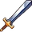

Fellowships are a way for players to band together to add their powers. A fellowship consists of up to 5 players which share common fellowship auras. The fellowship auras give bonuses to hero attributes, gold gain and firestone gain.
Fellowship Ranks
There are two fellowship ranks with the following privileges:
| Icon | Rank | Privileges |
|---|---|---|
| Leader |
| |
 |
Member |
|
{kind=link}
{kind=link}
A fellowship member who is offline for more than 5 days will go into offline mode and will be marked by , they then will no longer contribute to the fellowship stats . A fellowship member who is offline for more than 1 week will be automatically kicked from the fellowship. If the fellowship leader is kicked due to inactivity or leaves the fellowship, a random fellowship member becomes the new leader.
{kind=link}
Fellowship Auras
There are two fellowship auras: the battle cry aura and the fate aura.
Battle cry aura
The battle cry aura is determined from two factors: the base aura and the aura effect.
battle cry aura = base aura × aura effect
The base aura only depends on the number of online players in the fellowship and consists of up to four bonuses in the following way:
| Number of players | ||||
|---|---|---|---|---|
| 2 | +20% | - | - | - |
| 3 | +40% | +40% | - | - |
| 4 | +80% | +80% | +80% | - |
| 5 | +100% | +100% | +100% | +50% |
The aura effect is determined by multiplying the battle cry attributes of each online player in the fellowship:
aura effect = (1 + player 1 battle cry %) × (1 + player 2 battle cry %) × ...
The battle cry attribute of a player is determined by multiplying the player's talent upgrades, personal Tree of Life upgrade and campaign perk:
battle cry % = (1 + talent 1 %) × (1 + talent 2 %) × (1 + talent 3 %) × (1 + tree of life %) × (1 + campaign perk %) - 1
The battle cry attribute of a player in offline mode stops contributing to the aura effect until the player returns to the game.
Fate aura
The fate aura unlocks at character level 200 and is also determined from two factors:
fate aura = base aura × aura effect
The base aura again depends on the number of online players in the fellowship and consists of up to four bonuses in the following way:
| Number of players | ||||
|---|---|---|---|---|
| 2 | +20% | - | - | - |
| 3 | +40% | +40% | - | - |
| 4 | +80% | +80% | +80% | - |
| 5 | +100% | +100% | +100% | +50% |
The aura effect is determined by multiplying the fate attributes of each online player in the fellowship:
aura effect = (1 + player 1 fate %) × (1 + player 2 fate %) × ...
The fate attribute of a player is determined by multiplying the player's talent upgrades, Oracle's blessing and Medals of Recognition:
fate % = (1 + talent 1 %) × (1 + talent 2 %) × (1 + talent 3 %) × (1 + blessing %) × (1 + medal 1 %) × (1 + medal 2 %) * ... - 1
The fate attribute of a player in offline mode stops contributing to the aura effect until the player returns to the game.